kom igjen daa, har fått tak i noen sterke greier...
Alt begynte med én melding
NILS KRISTIAN BJØRO, utvikling, design & reportasjeleder LUCAS ALEXANDER ERIKSEN KJÆR, design ISAK HANSEN BARABAD, journalist TOMASZ GAJOS, journalist
22. september 2025
Vi gikk på barneskolen sammen. Han var den som alltid fikk alle til å le.
Men på ungdomsskolen begynte ting å endre seg. Først var det bare litt gøy. Så ble det alvor.
Dette er historien om en gutt som prøvde å finne en pause – og nesten forsvant helt.
Personen i denne historien ønsker å være anonym. Navn og samtaler er endret for å beskytte de involverte.
Advarsel: Denne fortellingen inneholder skildringer av rus og psykisk helse.
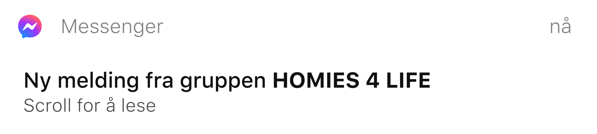
12. sep. 2017
Emil
haha 😂
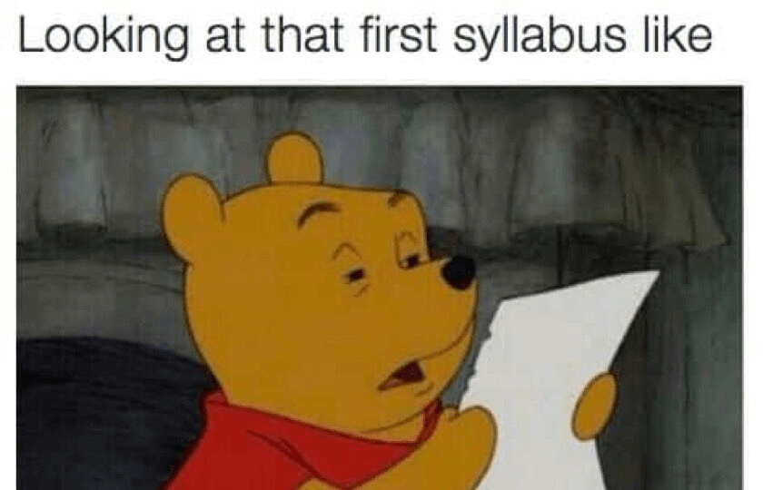
+
bruh
Emil
😂😂
joine i kveld? orker ikke mer lekser
Sander
bruh, vi har jo fagsamtale i morgen
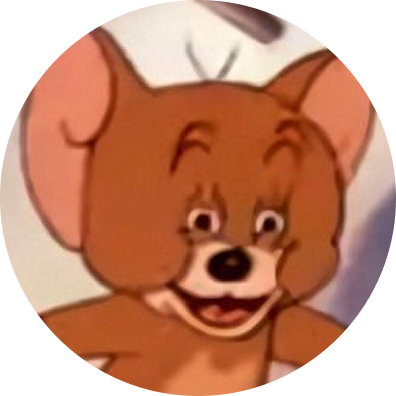
Marius
shit, det er sant. da må jeg øve
kom igjen, har snakket med Jonas
Emil
Jonas? Han fra 9C?
ja, han har fikset noen greier
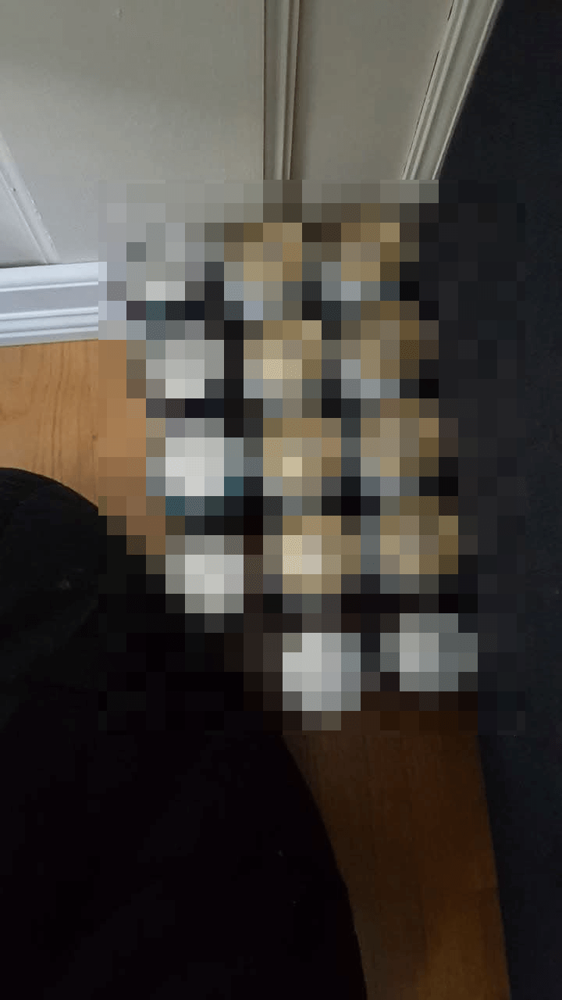
+
Marius
dæven, mamma hadde klikket
Sander
👀
Emil
hva skal dere gjøre?
vet ikke, drikke litt øl og spille xbox
Sander
damn
se hva Jonas sendte meg i går
▶
Emil
what 😳 hvor får han tak i det?
vet ikke, skal kanskje prøve det
De begynte å henge mer sammen etter skolen.
Først var det uskyldig, bare noen øl og litt Xbox.
Så kom rusen.
For ham ble det en pause fra alt: presset hjemme, forventningene, karakterene som sank.
Skolen ble tyngre, og det som startet som litt gøy, begynte å ta over.
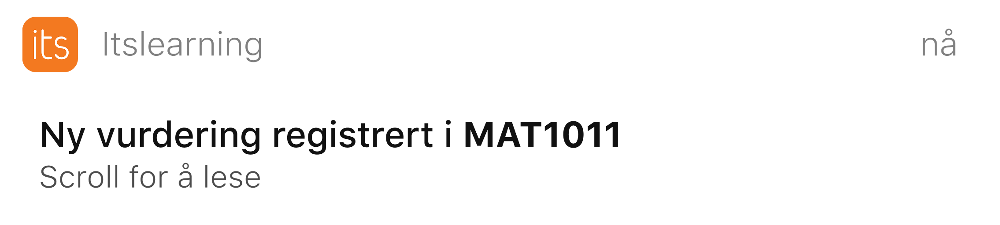
MAT1011 – Kapittelprøve Algebra
Vurdert 12. september 2017 18:39
2 -
Tilbakemelding
Du har vist at du kan noen grunnleggende regler, men mangler forståelse når oppgavene blir mer sammensatte.
Flere slurvefeil trekker karakteren ned.
Totalt sett akkurat nok til å bestå, men du må øve mer for å komme opp på et stabilt nivå.
Han stirret på skjermen lenge.
2 minus.
Han visste hva som kom til å skje hjemme.
Det var ikke lenger bare skolen som føltes tung, alt gjorde det.
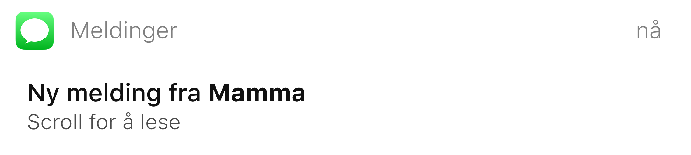
hei, jeg var innom itslearning i dag
hvorfor
så at du fikk 2– på matteprøven
ja
hva skjedde? du sa du hadde øvd
jeg gjorde det, men det gikk dritdårlig tydeligvis
du må jobbe mer jevnt, ikke bare dagen før
jeg prøvde mamma
jeg vet, men du må legge inn mer tid. snakket med pappa også
orker ikke snakke om det nå
greit, men vi må finne en løsning. vi kan se på oppgavene sammen i helga og finne ut
av det. vil du at vi skal finne en som kan hjelpe deg med matten?
nei, jeg har sagt at jeg ikke vil det
ok. men vi må gjøre noe. det blir bare vanskeligere på videregående
ja
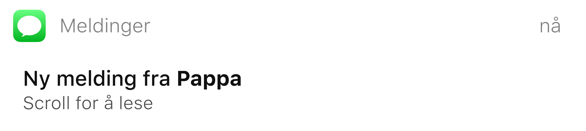
Er du snart hjemme?
nei, kommer hjem senere i dag
mamma sa du fikk 2– i matte
ja
hva skjedde? du hadde øvd, sa du
vet ikke, det bare gikk dårlig
du må ta det mer seriøst. 2– er for lavt
jeg prøvde jo
prøvde er ikke alltid nok
ja
du må finne ut hva som ikke funker. kanskje snakke med læreren?
ok
vi snakkes når du kommer hjem
Han la fra seg mobilen.
Det føltes som alt han gjorde ble feil.
Hos Jonas var det annerledes.
Der var det aldri mas, aldri press.
Bare stillhet – og rusen som gjorde alt borte for en stund.
2. oktober 2017
JONAS
yoo, møtes i morgen også?
MEG
ja seff
JONAS
det var dritlææættis i går 😂
MEG
hahah ja, har du mer?
JONAS
ofc bro, men har fått tak i noe annet
MEG
hva da
JONAS
en kompis på videregående har skaffa meg kontakter. han selger noe enda sjukere
+
JONAS
du får en helt annen opplevelse
MEG
shit ja, kanskje jeg skal prøve det
JONAS
ja, han sier det er syke greier
MEG
er du sikker på at det er safe?
JONAS
ja han sier det er safe 😎
MEG
kjøør!
Etter hvert hang de sammen oftere.
Skolen, kveldene, helgene – alt begynte å handle om Jonas. De begynte å eksperimentere med nye ting.
Han følte seg fri der.
Endelig noen som ikke dømte ham.
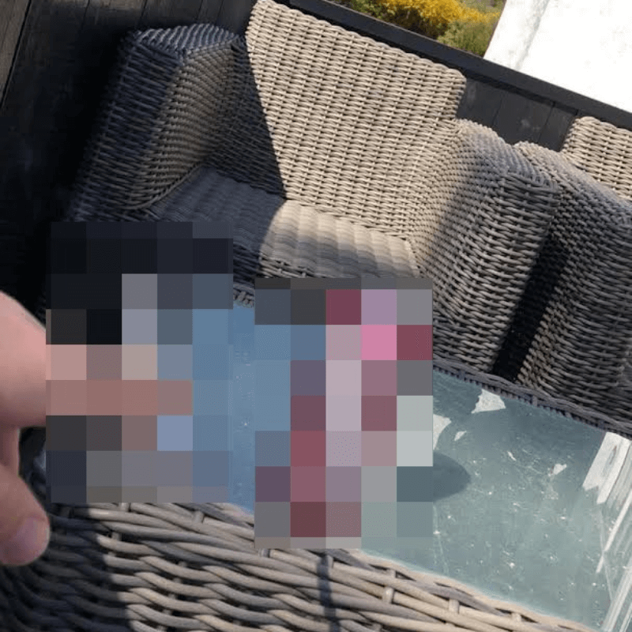
Et av øyeblikkene der han satt alene og prøvde å koble av fra alt.
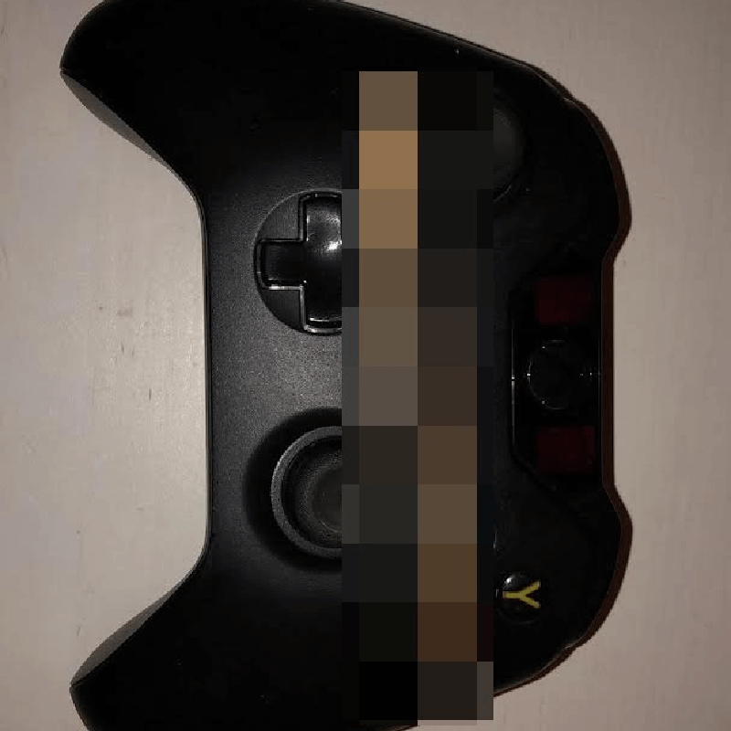
Xbox etter skolen var gøy i starten, men med tiden tok andre ting over.
Sammen begynte de å utforske ting de egentlig visste lite om.
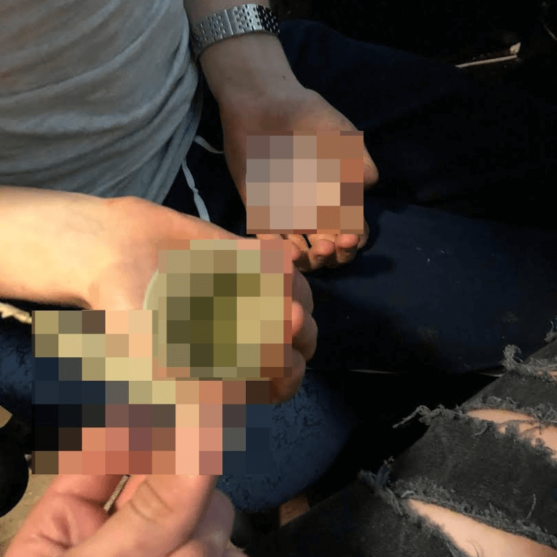
For ham føltes det som frihet. For Jonas ble det starten på noe mye mørkere.
Over tid begynte ting å forandre seg.
Jonas svarte sjeldnere.
Når de møttes, virket han fjern, som om han ikke helt var der lenger.
Han sa det gikk fint.
Men alle kunne se at det ikke stemte.
6. mars 2018
se her
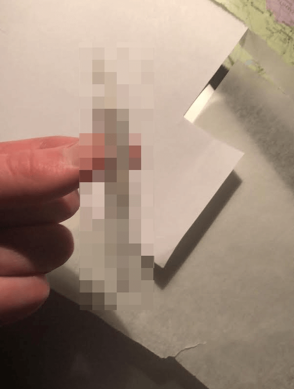
+
Emil
bro 😭
Sander
du tuller, det er mandag?? 😳
naah
Marius
det der er ikke lurt ass
chill, det er ikke farlig
Emil
du har hengt for mye med Jonas 😂
haha, kanskje
Sander
har du snakka med han eller?
ja, litt
Sander
hva skjer egentlig med han?
vet ikke helt, han sier det går greit
Emil
var ikke han på sånn behandling igjen?
Sander
jo, men de slapp han ut igjen fort, som vanlig 😭
Marius
de lar han bare gå, helt sykt
Sander
han trenger jo hjelp stakkars
Emil
husker han som en helt annen fyr før
Sander
ja word
han sa han vurderte å prøve noen enda sterkere greier
Marius
enda sterkere greier? hva mener du? 😳
bare sa han vurderte det, ikke sikkert han gjorde det
Marius
daaamn
Emil
han tåler ikke sånt ass, ikke de greiene
Sander
lurer fortsatt på hva han gjør nå
Emil
word
Etter hvert ble det stille fra Jonas.
Ingen visste helt hva som skjedde.
Månedene gikk.
Til slutt ble månedene til år.
Han mistet mer og mer kontakten.
Livet gikk videre — i hvert fall på utsiden.
Men inni ham føltes alt som om det sto på pause.
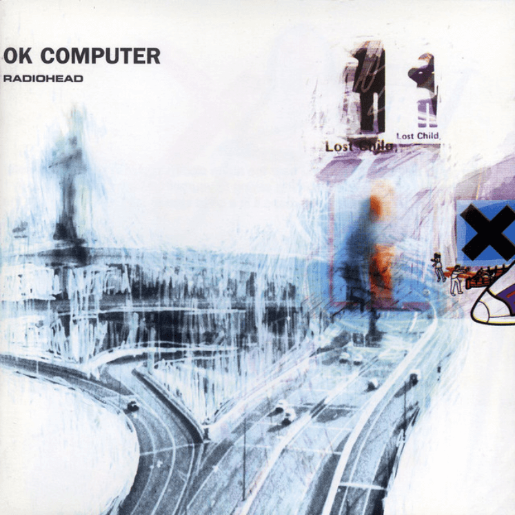
0:00-4:24
Karma Police
Radiohead
Det var en helt vanlig torsdag.
Han satt ute, hørte på Radiohead og tok et trekk.
For første gang på lenge, føltes alt litt rolig.
Men så kom varselet.
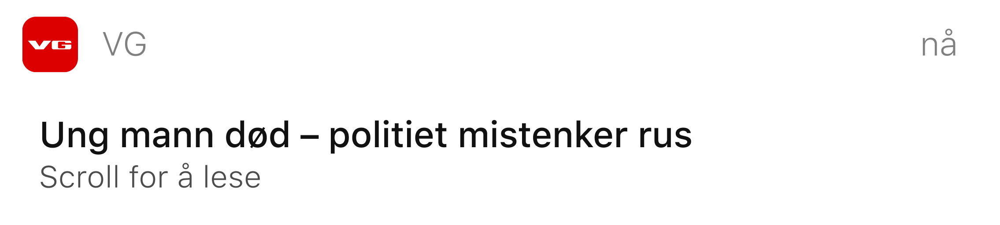
NÅ: Ung mann død – politiet mistenker rus
En person er omkommet, ifølge politiet
1 MIN SIDEN
Politiet rykket ut til en hendelse i natt etter meldinger om en mann som oppførte seg urolig i et boligområde.
– Da patruljen kom til stedet, fikk de ikke noe kontakt med ham, sier operasjonsleder i politiet.
Mannen, som er i slutten av tenårene, ble erklært død på stedet.
Politiet undersøker nå om rusmidler kan ha vært involvert.
– Vi har funnet gjenstander på stedet som tyder på det, sier operasjonslederen.
Vi oppdaterer saken.
Han leste overskriften flere ganger.
Ordene føltes uvirkelige.
Det sto ikke navnet hans.
Men han visste hvem det var.
12. okt. 2020
Sander
Har dere sett nyhetene??
Emil
Ja, jeg fikk vite det for en time siden før de skrev om det
Marius
Hæ vet du hvem det er?
Hva??
Emil
Ja, noen sa det er en fra skolen vår, det er alt jeg vet
Marius
Seriøst? Kødder du?
Marius
Vet du fra hvilken klasse?
Emil
Nei, det fikk jeg ikke vite
Sander
Det er ikke Jonas?
Nei det kan det ikke være
Men det var det.
Det var Jonas.
Den kvelden stoppet alt.
Lyden. Meldingene. Tankene.
For første gang på lenge, føltes alt helt stille.
Slik husker de ham
"Han var alltid den som fikk oss til å le"
"Jonas var en sånn fyr som aldri tålte stillhet – han måtte alltid finne på noe"
"Han brydde seg alltid om andre mennesker"
"Ingen av oss skjønte hvor dårlig han egentlig hadde det"
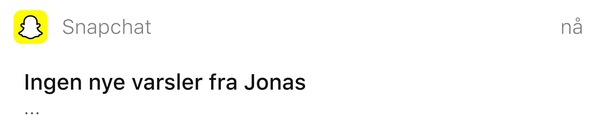
Ukene etterpå gikk i ett.
Han sov lite.
Skolen ble ubetydelig.
Alt minnet ham om Jonas.
Noen ganger føltes det som om han fortsatt skulle få en melding.
Men så kom varselet som skulle endre livet hans.
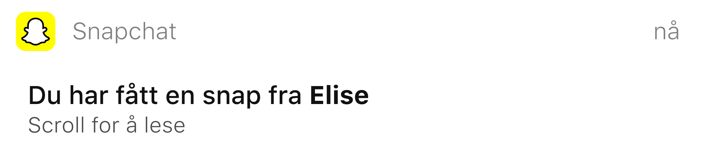
15. november 2020
ELISE
Hei, hvordan går det?
MEG
Det går bra, hva skjer?
ELISE
Jeg lurte på om du ville finne på noe sammen til helgen? Hvis det passer 😊
MEG
Ja, det tror jeg passer!
ELISE
Så koselig! ❤️❤️
Det var første gangen på lenge noen spurte.
Han ble sittende og se på meldingen en stund.
Til slutt skrev han ja.
Ikke fordi alt var bra.
Men fordi det var på tide å prøve igjen.
De begynte å møtes oftere.
Etter hvert ble det mer.
Hun ble en trygghet. Den første på lenge som fikk ham til å smile uten at han trengte noe for å klare det.
I dag bor de sammen.
Etter videregående tok han et fagbrev som elektriker.
Nå jobber han som elektriker, og sier at livet endelig føles som hans eget igjen.
Nå kan han bruke hendene — uten å sitte stille.
Noen ganger snakker de om Jonas. Ikke for å glemme, men for å huske hvor langt han har kommet.
Det er mange som sliter.
Som kjenner på presset, stillheten, forventningene og som ikke vet hvem de skal snakke med.
Noen klarer å finne veien ut. Andre gjør det ikke.
Ingen burde måtte stå alene i det.
Denne historien handler om én som rakk å snu – før det var for sent.
Men for Jonas kom hjelpen for sent.
Han ble et resultat av et system som ikke fanget opp det alle kunne se.
Et system som burde vært der da alt begynte å rakne, men som ikke var det.
Og alt begynte med én melding.
Bak historien
Denne fortellingen bygger på en sann historie fra da journalisten gikk på ungdomsskolen sammen med
hovedpersonen.
Journalisten kjente Jonas litt – de gikk i samme tyskklasse og snakket av og til. Han husker ham som en
omtenksom og livlig gutt som fikk andre til å føle seg inkludert.
Meldinger og bilder er hentet fra virkelige samtaler og gruppechatter som journalisten har fått innsyn i.
For å beskytte de involverte er navn, meldinger og detaljer endret. Tidspunkter og datoer er også justert.
Visuelle elementer som kan knyttes til rusmidler er bevisst gjort uklare for å ivareta etisk og pedagogisk
ansvar.
Prosjektet har ikke som mål å fremstille rus som noe positivt, men å vise hvordan press, forventninger
og psykisk vansker kan føre unge inn i vanskelige og destruktive mønstre.
Historien er laget for å skape refleksjon, ikke for å normalisere eller romantisere rusbruk.
Alle bilder og videoer er symbolske framstillinger av tematikk, ikke en oppfordring til bruk.